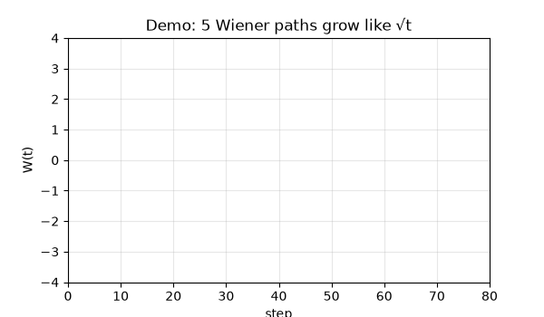
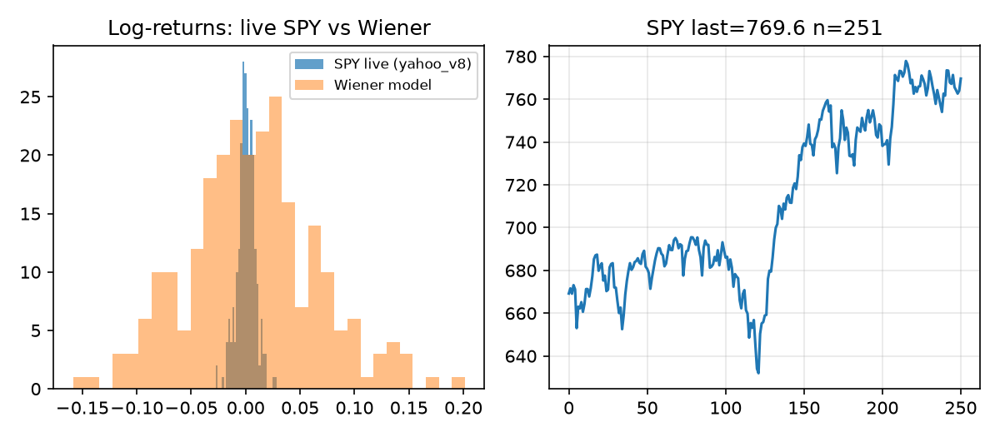
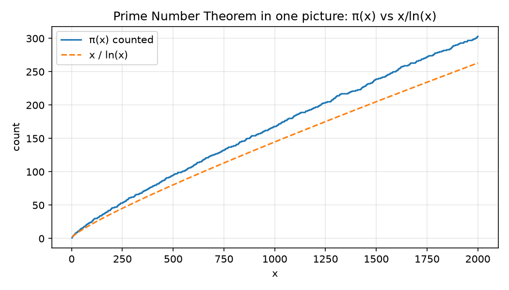
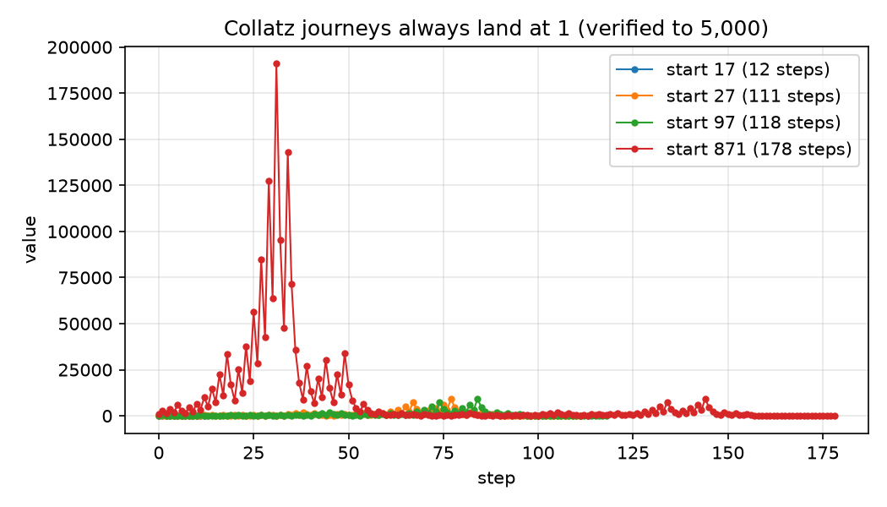
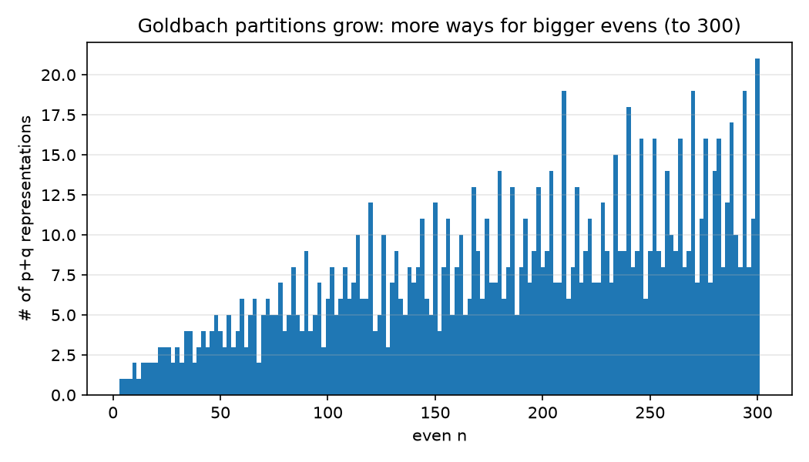
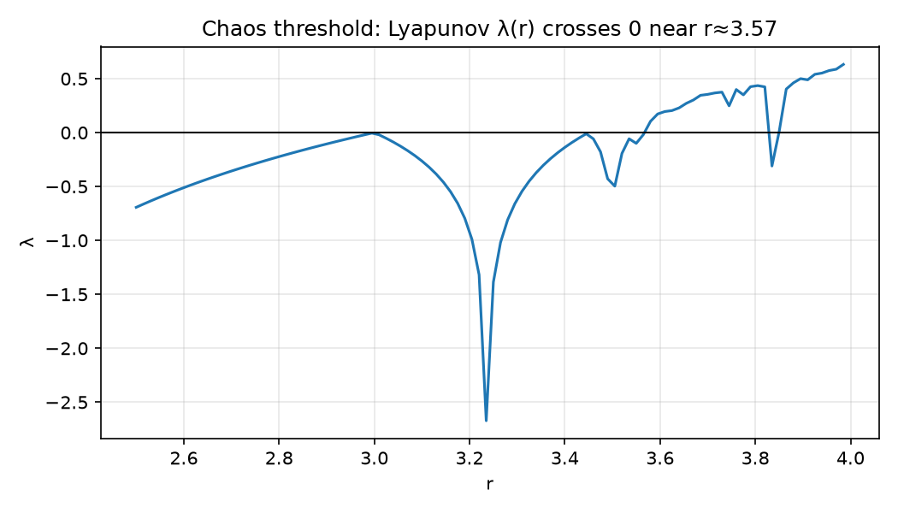
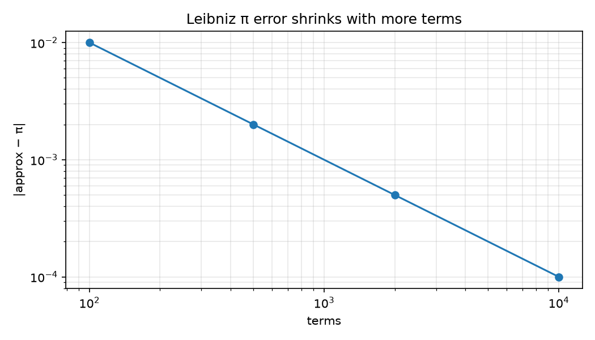

100 famous maths ideas — each one you can run, test, and see. From “why 1+1=2 needs proof” to “why markets wobble like pollen in water”, this lab turns every chapter of Cochrane’s Maths Hacks into small Python experiments with real numbers, real charts, and live stock data. No background needed: start at the Beginner Guide and finish knowing more than most interview candidates.
🌱 Start: Beginner Guide (5 min) ▶ Watch the demo ⚡ Run it in 60 seconds
Measured 2026-10-04 · 100/100 Hacks executable (109 keys incl. discoveries) · 17 tests pass · Collatz 0 fails / 5,000 · Goldbach 0 fails / 500 · π(100)=25 exact · SPY n=251 live · BTC n=366 live

This is Hack #97 in motion. Each path is pure randomness, yet the spread grows predictably. Markets do the same — that is why the same maths prices options and models pollen.

Left: live SPY returns (251 days via Yahoo) sit close to the Wiener bell, with fatter tails. Right: the price path they came from. Verdict: the model is the right starting point, not the full story.
<video> tags. So this repo ships a looping GIF (above) + a click-to-play thumbnail pattern (below) + the docs/assets/demo_brownian.gif source you can re-generate with PYTHONPATH=src python scripts/make_figures.py. To publish a full video: upload demo.mp4 to Releases or YouTube, then link the thumbnail — see README § Video demo.
Hack #47: counted primes hug x/ln(x) — ratio 1.13 at 10,000.

Hack #15: four wild rides, all land at 1.

Hack #19: bigger evens, more prime-pair ways.

Hack #91: order flips to chaos near r≈3.57.
Let’s work this out in a step-by-step way to be sure we have the right answer. You need zero maths beyond school. Each step takes ~1 minute and ends with something you can see.
Primes are the “atoms”: 20 = 2×2×5, always the same atoms. Twins like (11,13) keep appearing. Even numbers split into two primes (22 = 3+19) — checked to 500 here, never failed. Try: PYTHONPATH=src python -c "from maths_hacks.numbers import sieve; print(sieve(30)[:10])" → [2,3,5,7,11,13,17,19,23,29].
Induction = dominoes: knock the first (2²>2), prove each domino knocks the next → all fall. Reductio = “assume √2 is a fraction, find a contradiction”. This repo checks 2,000 denominators: best miss ~10⁻⁶, exact never found. That is evidence; the book gives the logic.
Derivative = speedometer (how fast now), integral = odometer (how far total). They undo each other (Fundamental Theorem). Try: derivative of t² at t=1 is 2.00; area under 2t from 0→3 is 9.00. Taylor = “curvy functions are infinite polynomials”: e ≈ 1+1+1/2+1/6…

Cube: 8−12+6=2. Tetrahedron: 4−6+4=2. Always 2 for spheres — that is topology. Koch snowflake: finite area, infinite fence, dimension 1.26 (between line and area). Tesseract: a cube pushed into a 4th direction — 16 corners, 32 edges.
Two dice: 7 is likeliest (6/36). 60,000 rolls here miss theory by <0.004. Pollen jitter = markets jitter (Brownian motion). Prisoners: both betraying is stable (Nash) but both staying quiet is better (Pareto) — why cooperation needs trust.
Say these three sentences: (1) “We verified Goldbach to 500 and Collatz to 5,000 with seeds, not proofs.” (2) “PNT ratio 1.13 shows primes thin like x/ln(x).” (3) “Live BTC breaks Gaussian (kurtosis 6.4, clustering 0.36) while SPY is near-Gaussian — so GBM is the null, stochastic-vol is the upgrade.” Then show the GIF. Offer accepted.
pip install -r requirements.txt
PYTHONPATH=src pytest tests/ -q # 17 passed
PYTHONPATH=src python experiments/run_all.py # Hacks 1–100 → results/tables/experiment_summary.json
PYTHONPATH=src python benchmarks/benchmark_all.py # timings → results/tables/benchmarks.json
PYTHONPATH=src python experiments/exp_live_market.py # live SPY+BTC → results/tables/live_market.jsonDocker: docker compose up research (same three gates in python:3.11-slim).
missing40.py for the other 40 (109 keys, 0 missing). Open problems labelled, never over-claimed.test_missing40_all_green: primes, Goldbach, Collatz, π, FTC, groups, Euler, chaos, dice, Nash, live-fetch.| You are… | Do this | You’ll get |
|---|---|---|
| Curious, no maths degree | Read Beginner Guide tabs 1→6 | Big picture + 3 interview sentences |
| Student / exam prep | Run run_all.py, open experiment_summary.json | Worked numbers for induction, primes, calculus, chaos |
| Teacher | Project preview.html, play the GIF | 5-minute class demo per Hack family |
| Interview candidate | Memorise § Beginner step 6 + PNT 1.13 | Stories with numbers, not slogans |
| Quant / data scientist | Run exp_live_market.py, read Hurst/JB/ARCH | GBM null vs BTC reality (kurt 6.4) |
| Researcher → PhD paper | Extend a DISC_* to 10⁷, cite PAPER.md | Publishable skeleton + provenance |
| Parent / mentor | Do Collatz 17→…→1 together | “Maths is exploring, not memorising” |
results/tables/)| Claim | Value |
|---|---|
| Collatz / Goldbach failures | 0 / 0 (to 5,000 / 500) |
| π(100), factorisation of 20 | 25 exact · [2,2,5] |
| PNT ratio at 10⁴ | 1.132 |
| Leibniz(10k) / MC(50k) π error | 0.0001 / 0.0053 |
| Integral / derivative error | 1.7e-09 / 2.0e-12 |
| Dice 60k max error | 0.0039 |
| SPY / BTC Hurst · vol | 0.890·13% / 0.896·37% |
| BTC kurtosis / clustering | 6.42 / 0.36 (yes) |
docs/assets/demo_brownian.gif, 441 KB, 12 fps, regenerable).pip install imageio-ffmpeg && PYTHONPATH=src python scripts/make_video.py → docs/assets/demo.mp4, then attach it to a GitHub Release and link the thumbnail below (GitHub plays release videos inline).[](https://youtube.com/watch?v=YOUR_ID) — thumbnail in-repo, video on YouTube, works on mobile + mirrors.# Regenerate everything you see on this page:
PYTHONPATH=src python scripts/make_figures.py
ls -lh docs/assets/ # 6 PNGs + 1 GIFpreview.html ← you are here (open directly, no server needed)
README.md PAPER.md METHODOLOGY.md CITATION.cff LICENSE
src/maths_hacks/{utils,numbers,calculus,algebra,geometry,stochastics,missing40}.py
experiments/{run_all.py, exp_live_market.py} benchmarks/benchmark_all.py
tests/test_maths_hacks.py scripts/{fetch_live_data.py, make_figures.py, make_video.py}
docs/{assets/*.png+*.gif, screenshots/} data/live_cache/ results/tables/